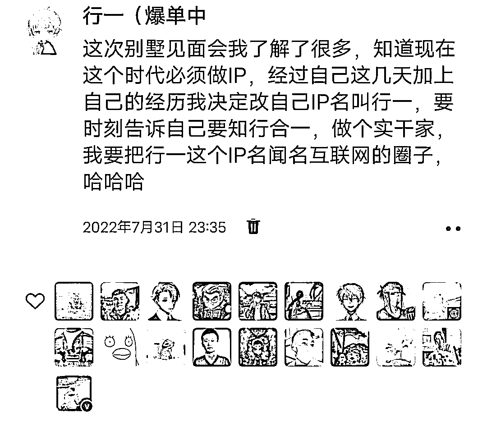
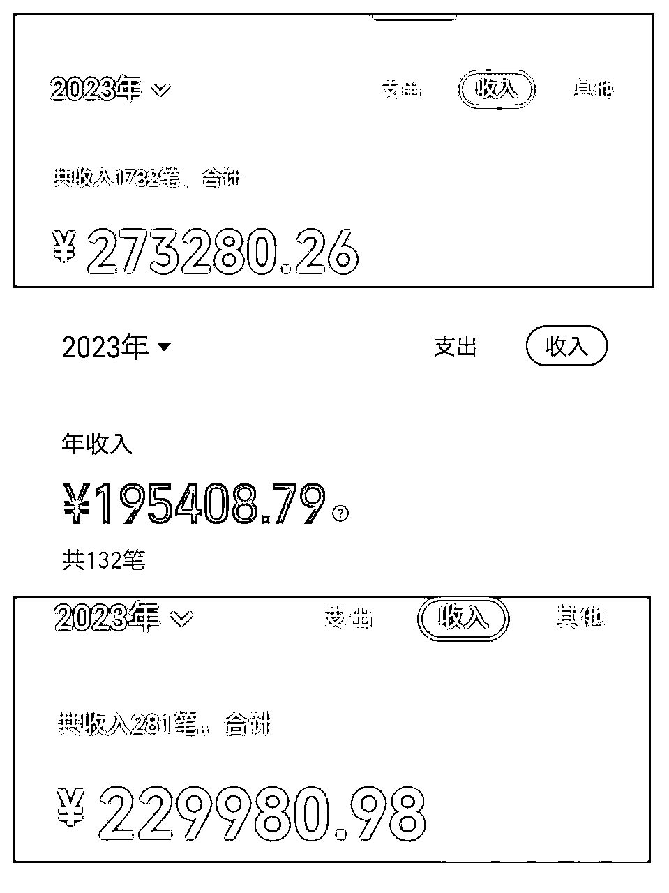
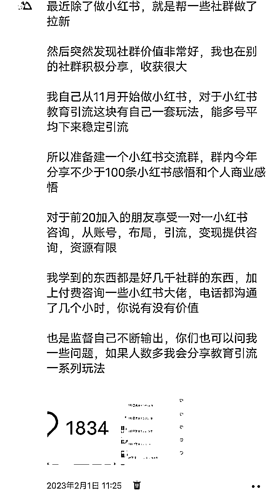
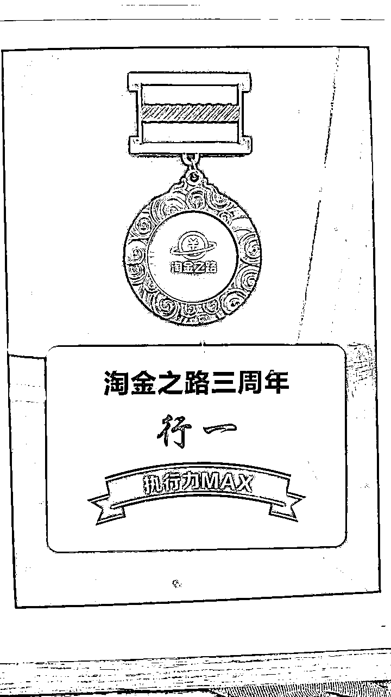
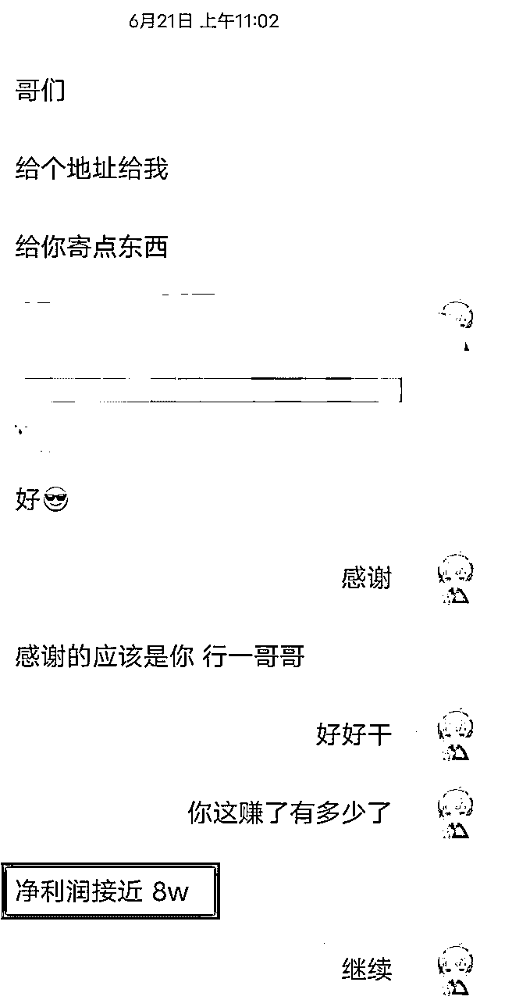
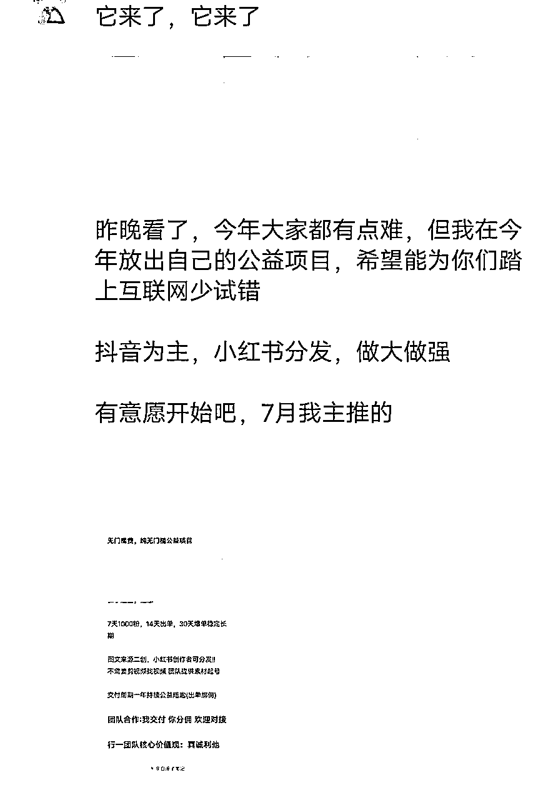
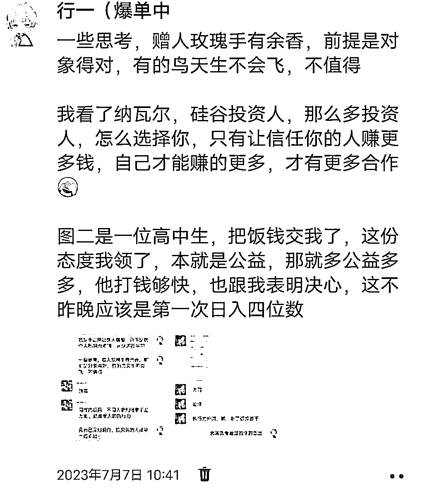

来源：https://wxm1taza3m.feishu.cn/docx/RQ8Tdrx8doQD8Bx4lWEcjCaEnqg
优秀的圈友们，你们好，我是行一，02 大学生，一位在路上的终身学习者。
目前手下两家工作室，一家小红书电商直营，一家搞流量直营，21岁的我，目前达到这样的结果我已经知足，但仍需继续努力。
回到一年前的某个见面会，见到我的偶像，拱卒哥哥和狗哥，同时那晚见到了靠谱姐姐，也是我最感恩的一位姐姐，最让我受益的是一些互联网大佬给我的建议。

如今回想当初这个IP的由来，深有感悟，起来的背后太不易了。同样做这个IP，让我一年不到，赚了人生第一个百万，开了第一家公司。下面是今年的收益截图：

加上目前自己的私域流量资产和工作室项目资产，我是破了百万的目标，向着八位数路线前进了。
最近知道我的都知道我来到了长沙，前段时间在长沙第一次生财见面会分享自己的小红书干货。一个在东北有自己直营工作室，为啥敢一个人来到陌生的城市开始新的征途，这个城市是跟兄弟们的承诺，是下一阶段的开端。
起来的背后离不开兄弟们的助力和贵人们的扶持，但前提还是得自己强，得自己牛，自强则万强，让别人愿意带你，愿意跟你也是我的能力之一。
接下来上真诚利他分享，有收获可以支持一下弟弟：
一、行一IP的那些事
二、行一IP的操盘逻辑
三、行一IP感恩的人和事
四、行一IP未来的规划
在转向玩流量之前我是玩短视频带货的，自从想做IP，团队的方向有的被我砍了，我带团队全力死磕流量，项目找了当时承接流量的项目，带别人撸货，做个倒爷，这个对于大学生的我很适合。
当这个撸货项目测试稳定了，我了解到小红书引流，那段时间天天早上就是刷小红书，看看最近的流量爆款是啥，看看别人撸货是咋引流，在这之前玩过小红书虚拟，一套玩法已经成熟，所以对于我在小红书玩引流是没问题的。
一个实干短视频剪辑带货的玩家突然转向搞流量玩家，这个跨度有点难，好在通过小红书引流卖资料把方法论和底层逻辑玩懂了，这也为我后来流量直营铺了很多路。
三个月的引流为我铺了近6000的私域流量，这些流量为我后来的操盘提供了很多信心。

这是我第一个付费社群，当初就是希望自己专注深耕坚持小红书，同时想把自己小红书的一些想法分享出去，筛出第一波行一IP的铁粉，做这个社群是给别人社群拉新突然想做的。
无意中做的突然发现这个社群对我帮助很多，向上链接了很多资源，向下筛出了一波执行力特强的人。
同时真的倒逼自己输出，我输出的就是费曼学习法，真诚利他。
从实干到被别人看见，感谢我的偶像狗哥和他的团队，我带了小红书引流以及小红书电商的行动营，第一次从实干家给别人社群带队。
真的带队初心是感谢狗哥一直以来的帮助和他的公众号文章给我的启示，我对这个非常重视，课件就是自己刚开始带私教的课程，用心教带来的影响很强。
后来被多个社群认可我的分享内容和能力，带队多个千人社群的小红书电商，越分享越幸运，帮助别人就是帮助自己。
在互联网创业道路上，人生第一个在互联网的奖，这是比我拿了奖学金还快乐的事。

执行力max，我是那种看到了一个东西赚钱，如果晚上没搞会睡不着那种人，这种习惯是不好的，现在在慢慢改变，这种习惯给我带来了健康问题很大。
人一定要专注，将一件事做到极致就是最大的商业护城河和天花板，这句话我一直告诉自己，所以深耕小红书这个平台半年多了，这个平台的随时调整方向都在关注着。
最开始我是由于小红书电商直营团队货款不足，去做自己第一个服务型产品，就是小红书电商私教，早期跟我的私教，带了20个，有十几位都是小红书千单选手。
自己在学校能带普通大学生小白小红书电商三个号，单月达到1w+利润，也就能带私教，最后成功验证我的想法。

也是多亏了这波私教铁粉给我带来了第一波货款，让我一个月把外扩内衣这个类目做到多个号榜单前几，那时候就疯狂扩，管它平台规则呢，一搞到底。
通过自己真诚利他分享自己的实干经验以及在别的社群带队身份，开始被一些哥哥看上，找我合作后端，刚开始我是有点担心的，但心里还是告诉自己，我是实干三年出来，特明白新人小白该如何做项目，我可以的。
但我搭建自己的实战营产品以及给别人管后端，我是一边跟学员学习，一边复盘自己的经历，不定期分享自己的复盘以及对项目的理解，方法论＋复盘论让我把实战营体系产品做的很好。
自己同时每天都是费曼学习法，进步很快，比如我把晚上跟我自己直营团队讲的优化复盘输出到群里，然后内化吸收，一直在迭代进步，越输出对这个项目理解越多。
实战营核心就是真诚利他，越分享越幸运，目前算是小红书电商头部，小红书电商的底层拆解就是短视频带货，拆分一下就是账号数量＋账号权重＋带货选品＋稳定更新，这些地方细分拆解优化，就能把这个项目做的更加长久。
行一IP背后的支持者是铁粉，为了感谢当初支持我的那批人，就是我的铁粉，他们助我启动了一波，这个七月我开了自己的公益项目，我自己用我的资源免费带人。

公益项目一方面感谢自己铁粉的支持，一方面纪念一下自己IP一周年。
写到这里，行一IP的一年那些事基本写完，未来继续精彩。。。
我写这篇文章之前也在梳理自己的IP，我想说的，当初就是一时感悟兴起发个朋友圈，根本都没任何操盘理念。
看到别人干啥我干啥，中间还有一些贵人的推动着干，然后达到现在这样的结果。
但在这些跑的过程中，发现自己做对了一些事，正是这些事让我成，这些事是可以提炼出来的。
自己未做IP之前，从自己实干项目到搭建团队做项目，有那段付出没结果的日子，有那段看了别人出结果自己却啥结果都没有的日子，有那段项目果实被团队成员窃取的日子，自己的实干和管理能力在那三年积累了很多，也让我有了接下来的方法论＋复盘论去带更多人实战项目。
我的擅长点从我的优势分析就是关系建立，第一还是战略思维，但第二的关系建立给我很多帮助。
向上我总有自己的感恩之心，看到比我优秀的我会第一时间去给他的文章赞赏，因为我在他的文章输出收获了很多。在请教别人过程中，我第一会发红包，尊重别人的时间，就是尊重自己的时间。
在圈内我是这样，在圈外也是，比如我看到某个同行的账号很好，我会私信加个微信，第一时间就是发红包，喝杯奶茶。
大部分都愿意跟我交流，我会真诚相待，一是我会分享自己的玩法，我觉得对于我看了他的号的成果，他对我的玩法绝对是能理解的，这样一个信任感就来了，接下来我们可能就会电话交流，交流彼此的玩法，最终成了好朋友。
一种玩法只是一时，但核心还是人，向上这样关系建立，不论在项目上，还是合作上，慢慢自己的项目资源就来了，这种关系建立，对于项目的长期玩法是很有助力。
他们其实不知道我们这样一个圈子，他们也有自己的圈子，但共享的同时我收获了很多，帮助别人就是帮助自己。
向下我是带值得带的人，一直在我的心中就是以刚开始的自己表现为标准选择带的人，我是小白起来的，知道什么人能带，有的人不值得你带，不带他才是你的荣幸。

未来如果我放大缺的就是人，所以向下我会很看好人，对于来自公众号的粉丝，目前高中，之前在学校我让他好好读书，不要想着搞钱，放假还来找我，能不能干成一件事，看他的决心，我不会让信任我的人失望的，结果没让他失望。
一些带人的例子，向下识人很重要。小红书电商异常值就是之前虚拟线上团队做项目的人来告诉我的，我2月十几号了解的，然后我才下场去测试，最终实现大爆单，到一个月搭建这样一个直营团队，这个项目给我带来近50w的纯利。
有人问我一年就破局了，你的点在哪里，我就说了四个字，真诚利他。
可以看到，向上我愿意帮助别人，向下我也愿意帮助别人，一个是项目资源交流互助，一个是带人测试做项目搞钱，他们给我带来的利己太多了，有些都是我自己都没意料到的资源。
分享出来，你们去执行，一年之后你们也可以破局，做项目的过程分享，项目做成的分享，通过做项目的同时积累的资源很强。
感谢一些社群的线下见面会，有些东西都在小圈子交流，真的学到了很多。
感谢生财提供这样一个圈子，越分享越幸运，感谢亦仁大大的组织。
感谢木易哥，盗坤哥，晓文哥你们的一些分享，作为实干家弟弟，一看就共鸣了。
感谢拱卒哥和狗哥的扶持，感谢芷蓝姐和靠谱姐的私下指导。
感谢生财的家人们和长沙生财对我这个初来长沙的弟弟一些认可。
项目直营，目前已有两家，小红书电商直营和流量直营，我接下来目标就是死磕流量到底，后端体系已经搭建完整。
会切入到抖音和小红书的商业流量获取，利用自己目前的能力去扩大公域获取流量的入口。
流量变为留量时代，真诚利他待人，维护好一千个铁粉。
项目成熟就是可以孵化，孵化多个我们这样的直营工作室，然后一起抱团取暖，实现项目上的垄断，掌握核心护城河和壁垒。
利用已有资源对一些人和事进行投资，从c端市场做b端市场，将团队做小，业务做大，阿米巴模式发挥最大，实现共赢。
个人成长离不开这样一个圈子，想在长沙生财这样线下的模式，把自己价值观传递出去，为孵化器做点资源贡献，这个模式就是未来的共赢模式了。
一年的IP，自己给它梳理出来了，对自己做IP初心永远不会变，知行合一。一个IP一定要做自己喜欢的事，创业是在创新，而不是消耗，这是我走出的差异化。接下来就朝着梳理的路线前进。
我最大的护城河就是我与这些人组建的关系建立，真诚利他，这是生财的价值观，也是我的价值观。越分享越幸运，一起生财有术。